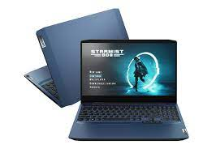
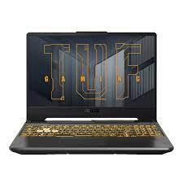
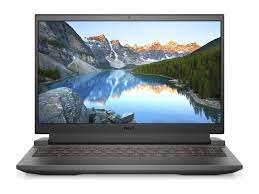
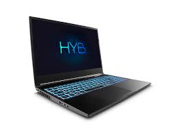
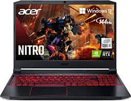
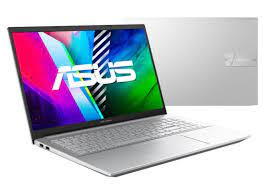

Os melhores notebooks com uma placa de vídeo rtx 3050 no Brasil atualmente
De acordo com o canal Lucas Ishii, o mesmo fez um vídeo rankeando as melhores opções no mercado brasileiro atualmente, tendo classificado em 5 níveis, quanto mais em cima, melhor era a opção de notebook
- Ideapad Gaming 3i
- ASUS TUF Gaming F15
- Dell G15(AMD)
- Dell g15 (i5 12500H)
- Avell A70 HYB
- notebook Legion 5
- Nitro 5
- notebook ASUS Vivobook Pro 15
Pontos fortes de cada notebook
Os notebooks citados nesta lista todos são boas opções, porém cada um é forte em uma área específica
Como por exemplo, tem uns que têm uma tela melhor, como outros têm um conjunto de CPU e GPU mais forte,
já outros têm seu diferencial o custo benefício, e outros têm a junção de uma ou mais características
diferenciais, porém isto tem um custo, logicamente.
Então, irei citar os modelos e suas características boas a seguir:
-
Ideapad Gaming 3i

-
A sua principal característica que o torna uma boa opção é o seu preço,
visto que ele é o mais barato com o conjunto de i5 11th gen e uma placa
de vídeo rtx 3050 no mercado brasileiro, aparecendo em promoções por até
mesmo 4500 a depender do cupom de desconto, cashback, etc.
Porém fora isso ele é inferior em quase tudo aos seus concorrente, tela 60hz,
IPS, não é 100% sRGB, então ele é bom por seu custo baixo.
-
ASUS TUF Gaming F15

-
Este o seu diferencial é a sua construção, pois ele é mais robusto, tem certificação
militar contra quedas, água, etc. Então ele é mais para ser utilizado em todo e em
qualquer lugar.
Seu conjunto de CPU e GPU são fortes, porém ele entrega quase que o mesmo que outros
que são um pouco mais baratos, então eu o recomendo se você realmente fizer questão dele
ser resistente e duradouro sem tantos cuidados, mas fora isso ele tem uma tela normal de
144hz, IPS, um conjunto de i5 11th gen com uma rtx 3050, é um conjunto bom, porém tem
tem melhores e até mesmo mais baratos.
-
Dell G15 AMD

-
Esta é uma opção de custo benefício se você quiser um conjunto melhor que o do Ideapad
anteriormente citado, tem um ryzen 5 de quinta geração com uma rtx 3050, é potente, tem
uma tela muito melhor se você se importar com Hz, como por exemplo se jogar muito jogos
competitivos,, os seus 120Hz do seu monitor irão fazer uma imensa diferença em sua jogatina.
Então o seu principal diferencial é o seu preço, que normalmente você encontra ele na faixa dos
5k, então se torna uma boa opção por um custo atrativo.
-
Dell G15 i5 12th gen

-
Esta é uma das melhores, senão a melhor opção em minha opinião atualmente dentre as opçõe no Brasil,
tem um i5 12th gen potente, uma placa de vídeo RTX 3050 boa, tela boa também, de 120Hz, teclado iluminado
memória ram DDR5 4800Hz de fábrica, então acaba por se tornar uma ótima opção, principalmente pelo seu
processador fortíssimo, bom para trabalhos e jogos que exigem mais da CPU.
-
Avell A70 HYB

-
Ele tem um bom conjunto também, na verdade é até melhor pois vem com i7 12th gen junto da 3050, se torna
uma opção perfeita para pessoas que trabalham com programas que forçam mais CPU, a construção dele é boa,
o único ponto que não deixa ele perfeito é as promoções que são raras sobre este modelo, na verdade a avell
em si tem poucas promoções.
-
Legion 5

-
Uma ótima opção com ryzen 7 de 5th gen junto de uma rtx 3050, tem um conjunto legal, porém não tem tanto desconto
como os da avell, os da lenovo não tem tanto desconto, mas as vezes tem, ele é bom em seu conjunto como um todo, porém
o preço é um pouco maior, visto que o seu geral e um pouco melhor que os notebooks com as mesmas especificações.
-
Nitro 5

-
Uma boa opção por ser um dos mais baratos para uma rtx 3050, porém seu processador é da geração passada
então a versão do Brasil não compensa pelo preço, porém se comprar na amazon com venda internacional vale
muito a pena, pois já tem o i5 12th gen, e a depender tu acha ele no preço de 6500 em certas promoções e com
16GB RAM, então é bom ficar de olho.
-
ASUS Vivobook Pro 15

-
Uma opção para pessoas que não mexem muito com jogos e só querem mais um notebook mais slim, mais fácil de
levar para os lugares, com um processador relativamente bom ainda, um i7 11th gen. Porém na minha opinião tem
escolhas melhores por preços até menores, visto que o vivobook fica na faixa de 6700 atualmente.
Ranking Final
Em seguida vem o ranking dos melhores notebooks com uma rtx 3050 de acordo com o dono do canal Lucas Ishii.
-
Ideapad Gaming 3i
-
ASUS TUG Gaming F15
-
Dell G15 amd
-
ASUS Vivobook Pro 15
-
Dell G15 i5 12th gen
-
Avell A70 HYB
-
Lenovo Legion 5
-
Nitro 5
Voltar